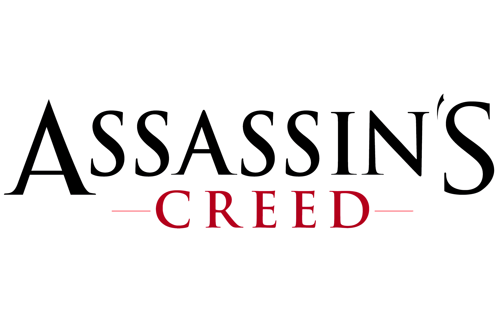

Sigilo entre sombras
La Hermandad se mueve sin ser vista: desaparecer entre la gente, escalar tejados y pasar desapercibido.
La Hermandad se mueve sin ser vista: desaparecer entre la gente, escalar tejados y pasar desapercibido.
Un asesino observa desde las alturas, localiza enemigos y planea el ataque como lo haría Ezio o Altair.
El arma clásica de los asesinos, siempre lista bajo la manga, simboliza a la Orden y su juramento secreto.
El universo de Assassin's Creed mezcla historia real y ficción en cada juego.
